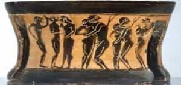
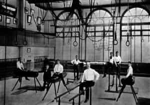
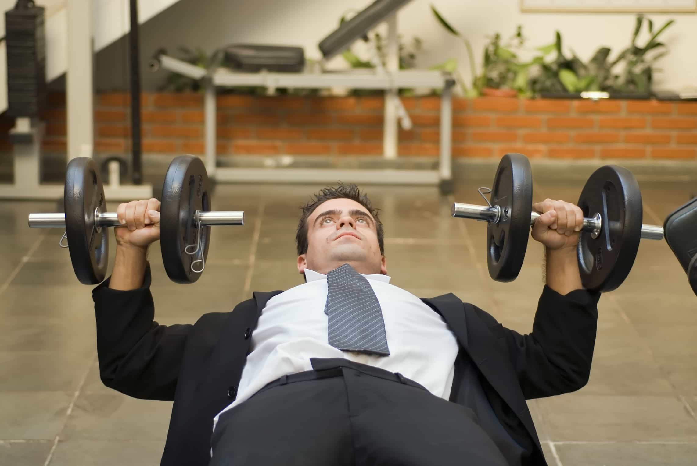
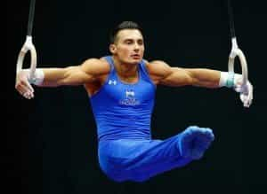
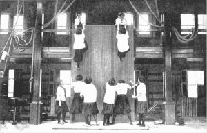

< < < Back
5 Ways To Improve High School Gym Class – Return Of Kings
Anybody who went to public school undoubtedly remembers gym class—more accurately, they remember how much it sucks. Ignoring the difficulties that awkward, hormonal teenage boys have with unwanted erections caused by seeing their nubile female classmates prance about in hot pants, a realization will quickly come upon all but the densest of students:
This class is completely worthless for its intended purpose.
At best, you’ll be playing basketball or soccer or some other team sport which will give you a decent cardio workout. At worst you’ll be doing nothing physical at all, instead sitting in a classroom listening to a bitter divorcee lecturing you about why men are the devil and why girls should stay away from them, all under the guise of being a sex education class.
Not my sex ed teacher, but a reasonable doppelganger of her.
How did this occur? A brief history lesson shall elucidate matters:
The History Of Physical Education
Physical fitness programs have largely existed in some form or another as long as there has been some method of paying trainers. While the idea of “physical education” being a field of study in schools (i.e., a body-and-mind hardening device meant to build character in the youngfolk) can arguably be traced back to the Spartan agoge, the deliberately cultivated brutality of this particular system—far beyond the useful, moderate amount of social shaming I advocate in my own writing-–would make any sensible person not want to cite this as a good starting point. Well, that and the deliberate taking of children from their homes, political repression, and constant pederasty that characterized the culture of that Peloponnesian city-state.

Physical fitness as we know it today started in the Renaissance and Baroque periods (fittingly, with their idealization of classical Greece and Rome). Early mass-produced books such as El Libro del Ejercicio Corporal y Sus Provechos by Cristobal Mendez, and De Arte Gymnastica by Mercurialis explained the benefits of a dedicated physical fitness regimen, methods of doing so, and analyzed these exercises to the highest standard of medicine of that time. It even suggested routines for women, children, and the elderly.
With the introduction of public schooling and mass education, physical education was adapted for that purpose. Much like how the modern Western school system is largely based on the 19th century Prussian model, so too was early physical education—German educators such as Friedrich Jahn felt that training the youth both physically and mentally was the best way to benefit his nation in the future (it’s worth pointing out that he was a veteran of the Napoleonic Wars), and such masculine nationalism quickly spread throughout Europe and to the United States.
In all countries, physical fitness was seen as next to mental fitness, and both were necessary to make a worthwhile citizen. Gymnastics and its accompanying apparatuses were literally invented during this time, and the typical grueling training of this sport was used deliberately to build strong men.

Remnants of this ancient, rediscovered, and again buried physical tradition remain in high school gyms across the United States: they still have gymnastic rings, Swedish Ladders, Pommel Horses, climbing ropes, and parallel bars buried deep within their storage closets. This is to be expected, as such apparatuses were in use well into the 20th century.
In my opinion, it is likely the combination of rising obesity rates and an increasing litigiousness in American society that led to schools essentially throwing up their hands and saying “To hell with it.” Realizing that none of their students would be capable of completing the tests, and not wanting to anger their sue-happy parents, they decided to make gym as easy as possible. As to why obesity rates and litigiousness increased so dramatically, that would require several articles to explain.
How To Improve Things?
It has been said by many writers that no American student of today would be capable of doing schoolwork that their countrymen of a century ago were capable of doing (having been educated in America, I cannot speak for other nations, but I imagine it’s similar). And indeed, having read excerpts from a reader textbook from a middle school in 1905, I honestly feel that most high school seniors would struggle with it.
Physical education is no exception. Look at the La Sierra PT program, introduced in California in the late 1940s and used across the country until the 1970s. It was a grueling bodyweight-only strength program combined with a difficult obstacle course that emphasized physical movement. Perhaps your gym had a peg board hanging on a wall high over your head, or a high ropes course, the purpose of which you never understood. These are remnants of this forgotten program.
Observe a boys only gym class from the early 1960s. It is astounding that an entire class could be so fit and trim.
As I begin enumerating the list of things that would help public phys ed, I’m not necessarily saying this program should be exactly copied for 2016, but…actually, to hell with it, I am.
1. Use the La Sierra Program, or a similar program with slight modifications

This program appears to be a pretty solid calisthenic program, with a few “tricks” thrown into it that are interesting as well—things like the peg climbing board or a ropes course. In my opinion, something similar to the Convict Conditioning curriculum would largely be acceptable, with some natural movement rigors to supplement it. It’s not like you’d need to buy much equipment for it, since the average high school probably has Swedish ladders, gymnastics rings, and climbing ropes in its closets.
2. Have teachers who know what they’re doing
Seems pretty obvious, but a teacher should lead by example—he should be reasonably capable of doing similar rigors to his or her students, as well as guiding his students through each progressive step and knowing how to diagnose injury if necessary. I assume I’m not the only person who had a fat, chain-smoking gym teacher, and I think we can all agree that a teacher should be able to do more than just watch and make sure nobody gets killed.
3. Allow the natural hierarchy of masculinity to run its course—within limits

As anybody who has ever interacted with a group of men knows, a hierarchy of masculinity will naturally form itself pretty quick. Despite what self-esteem pushers will tell you, this is normally a good thing. Boys tend to be inspired to achieve more if they see another man that is more masculine than them. The teacher does not need to encourage this happening, but as a sensible adult, I feel that the teacher should keep some basic regulation of this—mainly, so that actual physical hazing and bullying are avoided. In other words, there has to be a balance between the “Everybody gets a trophy” mentality and being “beaten in,” gangland style.
4. Grade, but be fair
While I have repeatedly been saying that physical education should be graded, and should be demanding, I understand that some people are naturally athletic, and some are not. Therefore, I propose that PE should be graded heuristically: by improvement.
For example, let’s assume that, hypothetically, a student comes into the school already capable of doing all of the advanced calisthenic maneuvers. He should be graded based upon how many repetitions with proper form he can add to his routine, or his progression to even more advanced maneuvers such as iron crosses, tiger stands, fingertip or clapping variations, increased time for static holds, etc.

In contrast, a student who is so weak he has to start with the knee pushups should be greatly commended if he can make his way up to the “hand and a half” push-up. Although he has not completed the series, it is clear the effort has been put in and is respectable—and besides, there’s always next year to test again.
Such a grading schemata is demanding of the students, but is also fair as it judges each student by their own skill level.
5. Understand that sexes are different, and make a routine for girls
While we often speak of fitness as something masculine—and it certainly is—women should also be encouraged to be fit. In my hypothetical curriculum standards would be lesser than those for the men. As this is not the military or another job where people’s lives are on the line, somewhat lesser standards for girls are acceptable.
To cite one example, girls would not be using the gymnastic rings in their training, instead using parallel bars or another apparatus that emphasizes female athleticism (namely balance and dexterity rather than raw power).

A sample curriculum
Having said all of this, you might be wondering what my curriculum would be. Assuming that PE is done twice a week in a block class, you could alternate between endurance or movement and strength days.
Day 1: 20 minute lecture on any related topic-sexual education, nutrition, musculature, etc, followed by the exercises—timed mile run to warm up, followed by muscular endurance and natural movement: rope climbs, obstacle course, peg boards, etc. Followed by cool down, showers.
Day 2: Lecture on related topic, followed by the exercises: the calisthenic series with push-ups, squats, pull-ups, leg raises, bridging, handstand push-ups. When complete, advance to gymnastics maneuvers: parallel bar handstands, ring work, etc.
And on occasion, the students can play some sportsball or do something frivolous and fun. Say what you will about my idea, it can’t be worse than what they’re doing now.
Read More: How Not To Deal With High School Bullies